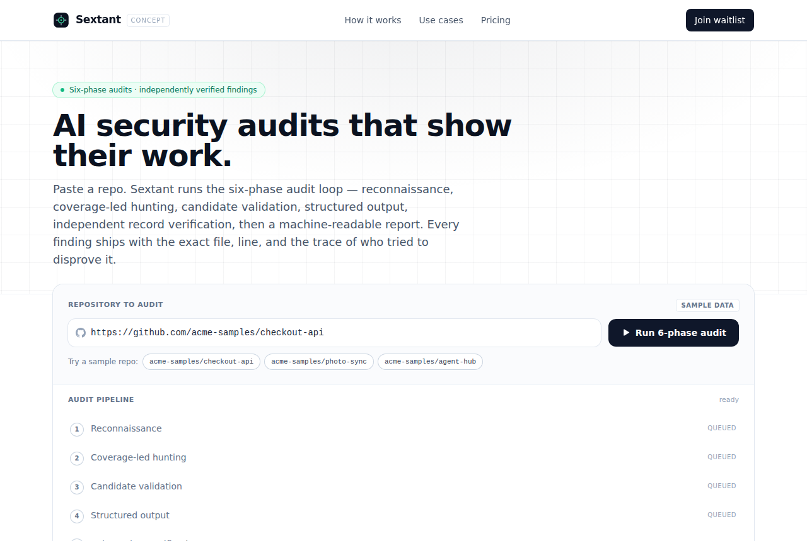

Cloudflare's security-audit-skill turns your coding agent into an auditor
cloudflare/security-audit-skill · SecurityMIT⭐ 63,364

cloudflare/security-audit-skill is a coding-agent skill that turns your existing assistant into a structured security auditor. Per the README, it seeds the vulnerability discovery harness Cloudflare described in its "build your own vulnerability harness" post, and it runs in six phases: reconnaissance (mapping architecture, trust boundaries, and input surfaces into architecture.md and coverage-ledger.json), coverage-led hunting with isolated hunter agents, candidate validation where a fresh verifier tries to disprove each finding, structured output into findings.json, independent record verification, and target-neutral reporting (REPORT.md, FINDINGS-DETAIL.md, NEEDS-VALIDATION.md).
Why it's taking off: it ships a large, opinionated attack-class library (web, client-side, supply chain, cloud/IaM, LLM prompt injection, memory safety), plus zero-dependency validators for the coverage ledger and findings, so output is machine-readable instead of prose. It follows the growing pattern of skills that ride on top of agents rather than replacing them — install with npx skills add, point your agent at a repo, ask for a security audit.
The product opportunity: most teams can't easily wire up parallel sub-agents and OS-level sandboxes. A hosted service that runs this skill against a repo, normalizes findings, dedupes across runs, and adds human review or a triage dashboard is a clear gap. Pricing by audit run or repo subscription. The hard part is trust: security claims carry liability, so "confirmed" vs "needs_validation" must be preserved honestly.
Today's top 5
| # | Repo | Buzz | Startup | Overall |
|---|---|---|---|---|
| 1 | cloudflare/security-audit-skill | 7.67 | 6.85 | 7.4 |
| 2 | tangency-labs/solidcraft | 7.67 | 6.4 | 7.37 |
| 3 | caru-ini/stack-diagram | 7.67 | 6.6 | 7.1 |
| 4 | ly05010419/MacNativeGames | 8.67 | 5.9 | 6.97 |
| 5 | livliv-dev/player | 8.0 | 6.85 | 6.83 |